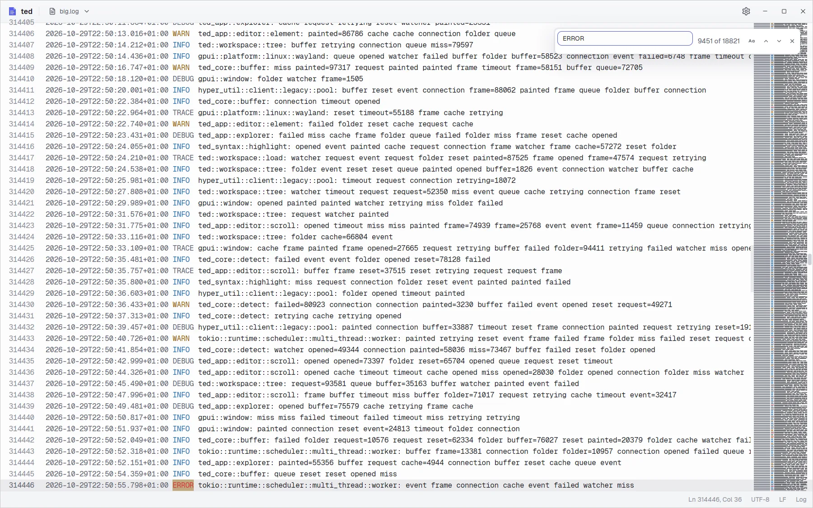
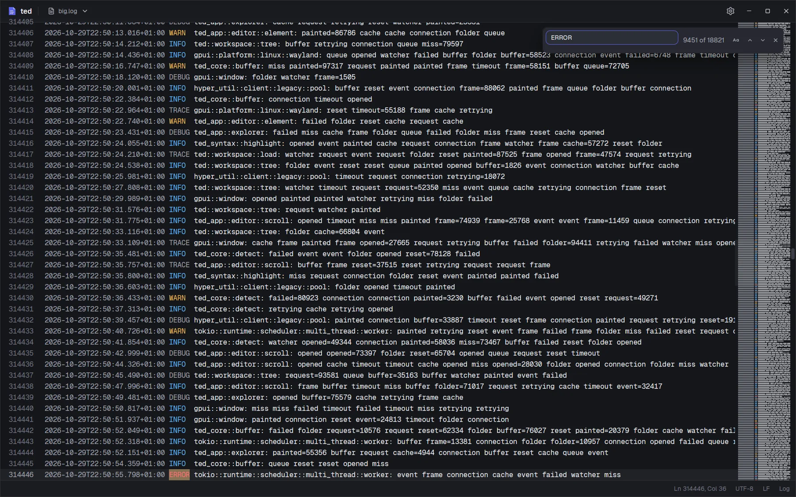

Logs of any size
Open a log of hundreds of megabytes and start reading at once: the first screen shows while the rest loads in the background. Find counts every match behind the scenes, so the window never waits.
- The first screen of a 100 MB log in under 100 ms
- Levels and dates highlighted, at any size
- Find in file with a match counter, case sensitivity and F3

